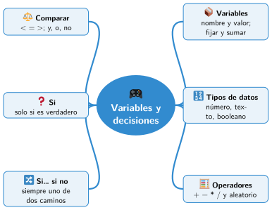

Bloque II · Programar con bloques
UD05 Variables y decisiones
Sesiones
- Sesión 5.1 Variables: la memoria del programa
- Sesión 5.2 El programa calcula
- Sesión 5.3 Comparar y unir condiciones
- Sesión 5.4 Decidir con si
- Sesión 5.5 Dos caminos: si… si no
Al terminar la unidad
Mapa mental de la unidad

✏️ Repasa la unidad con el mapa: tapa una rama y explica en voz alta lo que pone.